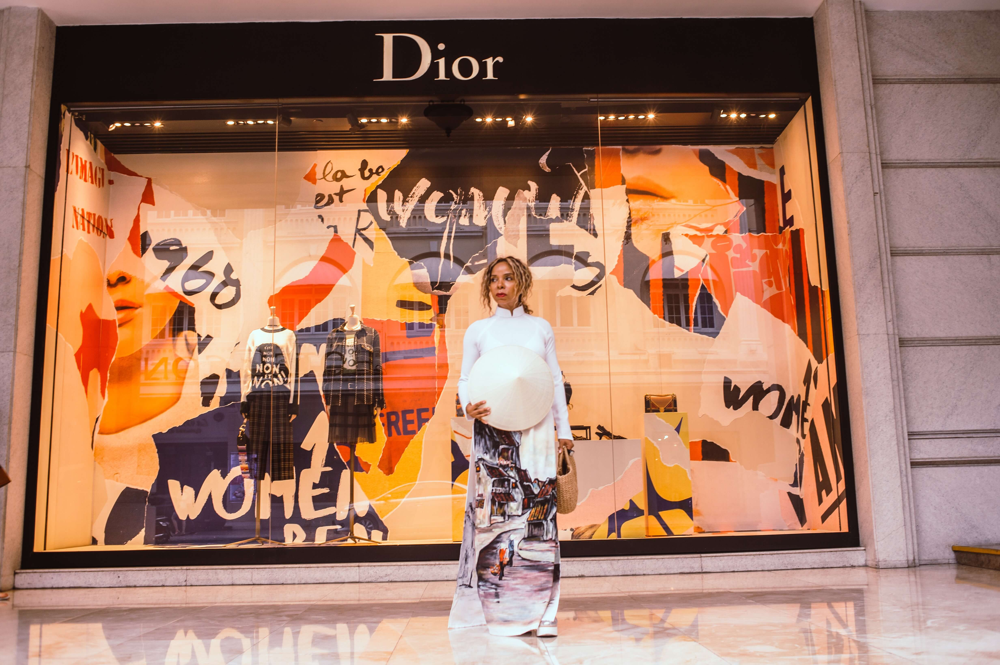

The 80s were crucial to Streetwear, Haute Coture crossover which created streewear as we know it today. With brands like Supreme with roots in skate culutre reaching $1billion valuation in 2017 and collaborating with the likes of Louis Vuitton. High end designers collaborating with streetwear brands has become common with High end designers collaborating with streetwear brands has become increasing common. Especislly since Virgol abloh’s off-white collobarations with LV, & Japanese streetwear brands like CDG helping to bring streetwear to the heart of ‘high end’ fashion. Street culture will continue to evolve. If you would like to contribute to its evolution.Join us !
If you would like to read more about the Haute Coture and streetwear cross over click hereto sign up to our mailing lists were we will be giving exlcusives updates and information about upcoming collaborations, drops and events